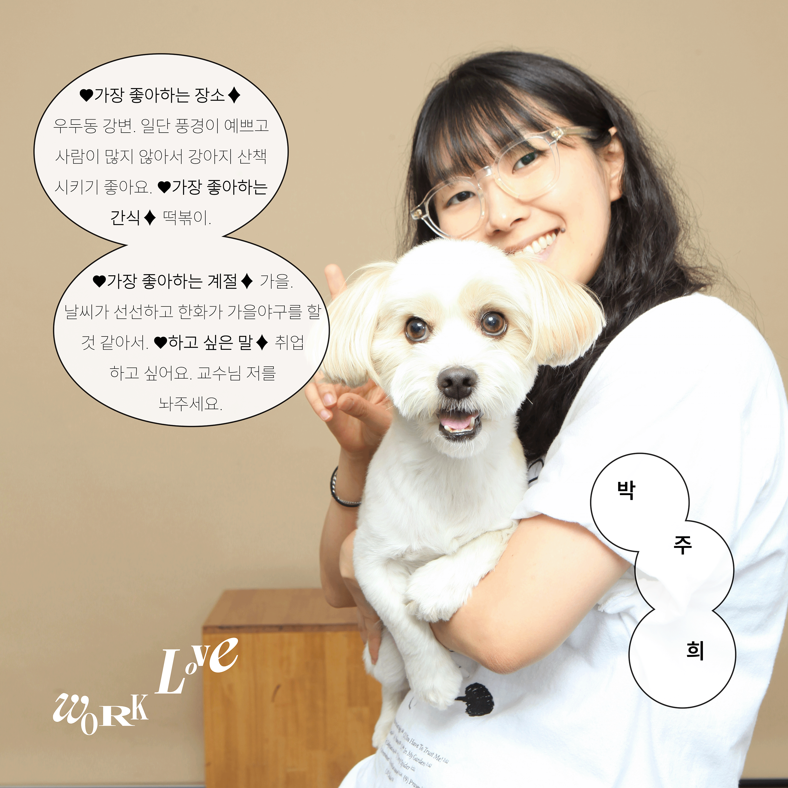

박주희 인터뷰

♥︎가장 좋아하는 장소♦︎
우두동 강변. 일단 풍경이 예쁘고 사람이 많지 않아서 강아지 산책 시키기 좋아요.
♥︎가장 좋아하는 간식♦︎
떡볶이.
♥︎가장 좋아하는 계절♦︎
가을. 날씨가 선선하고 한화가 가을야구를 할 것 같아서.
♥︎하고 싶은 말♦︎
취업하고 싶어요. 교수님 저를 놔주세요.
사랑하는 것
탱수. 강아지예요.
탱수를 처음 만난 곳은 어디였나요? 첫인상은 어땠는지 궁금해요.
탱수는 외할머니 집에서 데려온 강아지예요. 할머니가 키우던 강아지가 낳은 새끼 중 이곳저곳 입양 보내고 남은 강아지가 탱수였어요. 탱수는 제가 그동안 꿈꿔왔던 강아지 그 자체예요. 귀여운 건 물론 제 배에 올라온 강아지는 탱수가 처음이었거든요.
탱수와 함께한 기억나는 추억이 있다면 말해주세요.
2023년 1월 1일, 탱수와 일출을 보러 가겠다고 등산을 했어요. 새벽이어서 밖이 어두웠는데 플래시를 켜고 올라갔어요. 누군가는 있을 줄 알았지만 아무도 없어서 잘못됐다는 생각이 들었죠.(웃음) 그래도 어찌저찌 잘 올라가서 일출을 본 게 가장 추억에 남는 것 같아요.
탱수에게도 주희 씨에게도 좋은 추억으로 남았겠네요. 탱수와 주희 씨의 닮은 점은 뭔지도 궁금해요.
제멋대로인 경향이 닮았어요. 탱수는 산책을 하면서도 자기가 가고 싶은 방향으로만 가야 하는데, 저도 제가 하고 싶은 건 꼭 해야 하는 성격이거든요. 그리고 탱수가 점이 많은데, 저도 점이 많아요. 그게 외관적으로 닮은 점이에요.
탱수에게 바라는 점이 있나요? 반대로 주희 씨가 탱수였다면 본인에게 어떤 점을 바랐을 것 같아요?
무조건 건강이에요. 탱수는 신부전이 있어서 계속 관리를 하면서 지내고 있거든요. 건강한 게 1순위고, 또 15년 넘게 살았으면 좋겠네요.
탱수는.. 제가 야구를 보지 않고 집에 있기를 바라지 않을까요? 제가 항상 집에 있기를 바랄 것 같아요.
인간과 인간 사이의 사랑과, 인간과 반려견 사이의 사랑에는 차이가 있을 것 같아요. 이 차이에 대해 말해줄 수 있나요?
반려견을 키우는 사람은 다 알겠지만, 탱수의 세상에는 제가 전부예요. 인간과 인간 사이의 사랑과 다르게, 인간과 반려견의 사랑은 '무조건적인 사랑'이라는 점에서 차이가 있는 것 같아요. 이 무조건적인 사랑을 다른 사람들도 경험해봤으면 좋겠어요.
탱수와 함께할 때 '사랑'을 가장 크게 느낀 경험이 있나요?
산책할 때 제가 집에 들어오는 타이밍과 겹치면 탱수가 저를 향해 달려오는데, 그때 사랑이 가장 잘 느껴져요.
앞으로 탱수와 함께 하고 싶은 일이 있다면?
제주도에서 오름을 오르고 싶어요. (진드기만 문제 없으면!)
반려견과 함께 가기 좋은 장소를 추천해 주세요.
첫 번째는 우두동 강변! 여름에도 시원하고 풍경이 예뻐요.
두 번째는 하중도 생태공원. 돗자리 펴고 놀기 좋아요.
세 번째는 애니메이션 박물관 뒷편! 잔디가 있어 공놀이하기 좋답니다.
마지막으로, 탱수가 내게 주는 힘?
탱수의 존재 자체가 힘이에요. 오래오래 살았으면 좋겠고, 빨리 취업해서 온전히 책임지고 싶어요. 탱수는 제가 자리를 빨리 잡게 만드는 원동력이에요. ♥
조회수: ...